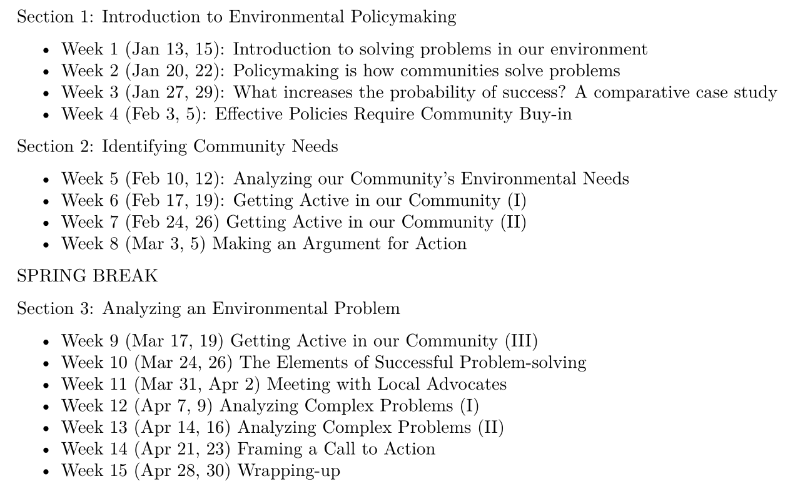
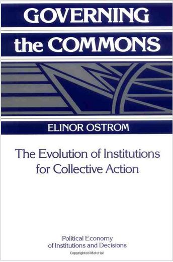
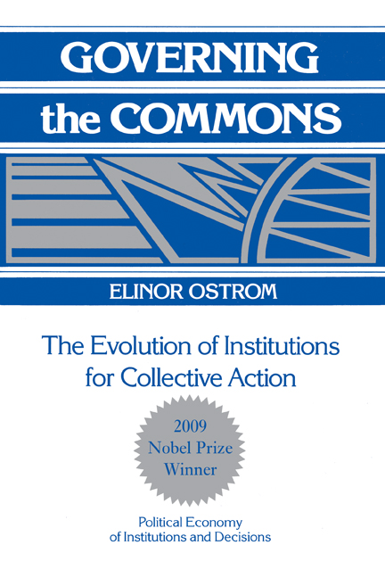
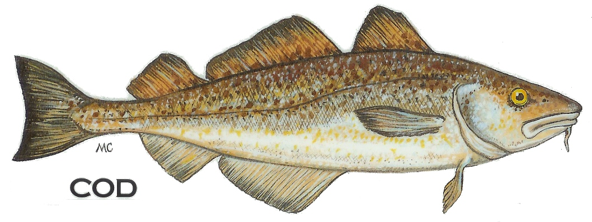

Today’s Agenda
Section 3: Analyzing an Environmental Problem
- Ostrom’s principles of adaptive governance
Justin Leinaweaver (Spring 2026)


Hughes (2006): DOC’S KEY
- Definition
- Objectives
- Constraints
- Strategies
- Keepers
- Experiment
- Yes!
The Collaborative Approach (Clarke & Peterson 2016)
- Is an adaptive process
- Uses the most appropriate science and technology
- Is implementable
- Incurs low transaction costs
- Has appropriate funding
- Is measurable
- Is socially legitimate
Adaptive Governance
Stakeholders, stakeholders, stakeholders!
A theory of policy design
Elinor Ostrom (1933-2012)

NOBEL PRIZE WINNER Elinor Ostrom

NOBEL PRIZE WINNER Elinor Ostrom
“What we have ignored is what citizens can do and the importance of real involvement of the people involved - versus just having somebody in Washington make a rule.”

Common Pool Resources (CPR)
…refers to a natural or man-made resource system that is sufficiently large as to make it costly (but not impossible) to exclude potential beneficiaries from obtaining benefits from its use.
…it is essential to distinguish between the resource system and the flow of resource units produced by the system, while still recognizing the dependence of one on the other” (Ostrom 1990, 30).
Common Pool Resources (CPR)
Resource System

Resource Units

Common Pool Resources (CPR)
| Resource Systems | Resource Units |
|---|---|
| Fishing Grounds | Tons of fish |
Common Pool Resources (CPR)
Common Pool Resources (CPR)
| Resource Systems | Resource Units |
|---|---|
| Fishing Grounds | Tons of fish |
| Groundwater Basins | Cubic meters of water |
| Irrigation Canals | Cubic meters of water |
Common Pool Resources (CPR)
| Resource Systems | Resource Units |
|---|---|
| Fishing Grounds | Tons of fish |
| Groundwater Basins | Cubic meters of water |
| Irrigation Canals | Cubic meters of water |
| Public Grazing Areas | Tons of fodder |
How is this a CPR problem?
Common Pool Resources (CPR)
| Resource Systems | Resource Units |
|---|---|
| Fishing Grounds | Tons of fish |
| Groundwater Basins | Cubic meters of water |
| Irrigation Canals | Cubic meters of water |
| Public Grazing Areas | Tons of fodder |
| River | Tons of waste absorbed |
Common Pool Resources (CPR)
| Resource Systems | Resource Units |
|---|---|
| Fishing Grounds | Tons of fish |
| Groundwater Basins | Cubic meters of water |
| Irrigation Canals | Cubic meters of water |
| Public Grazing Areas | Tons of fodder |
| River | Tons of waste absorbed |
| Parking Lot | Parking spaces filled |
Common Pool Resources (CPR)
| Resource Systems | Resource Units |
|---|---|
| Fishing Grounds | Tons of fish |
| Groundwater Basins | Cubic meters of water |
| Irrigation Canals | Cubic meters of water |
| Public Grazing Areas | Tons of fodder |
| River | Tons of waste absorbed |
| Parking Lot | Parking spaces filled |
| Bridge | Number of crossings |
Analyzing your Environmental Problem as a CPR
How many different ways can you describe your chosen problem as a common pool resource?
- e.g. system, units and flow
Ostrom’s CPR Cases
- Torbel, Switzerland
- Villages in Japan
- Huertas in Valencia
- Huertas in Murcia and Orihuela
- Huertas in Alicante
- Zanjeras in the Philippines
Ostrom’s CPR Cases
Small CPRs only
CPR fits in one country
15,000 maximum participants
Users dependent on CPR
1. Clearly Defined Boundaries
2. Match Rules to Local Conditions
3. Collective-Choice Arrangements
4. Monitoring
5. Graduated Sanctions
6. Conflict-Resolution Mechanisms
7. Recognition of Rights to Organize
8. Nested Enterprises
Ostrom’s Design Principles
- Clearly defined boundaries
- Congruence between rules and local conditions
- Collective-choice arrangements
- Monitoring
- Graduated Sanctions
- Conflict-resolution mechanisms
- Minimal recognition of rights to organize
- Nested enterprises
For Next Class
Evaluating Ostrom’s Principles using Success Stories
Find us an example of a community, operating at a relatively small level, successfully addressing YOUR chosen environmental problem.
- Prompts on Canvas